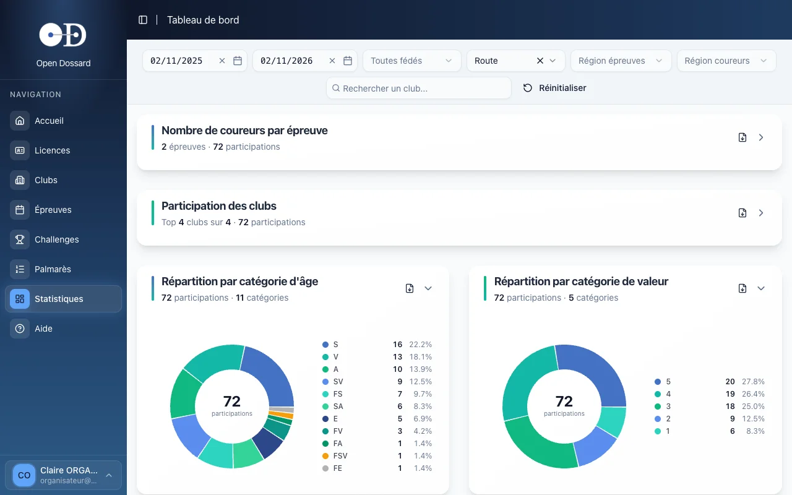
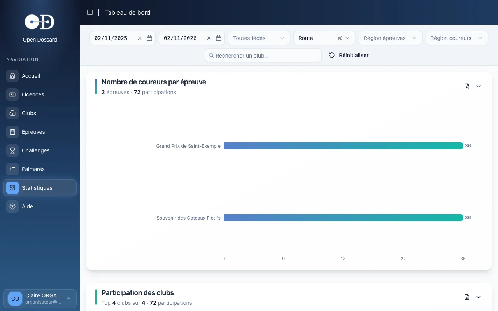

En bref
- • Le tableau de bord compte les participations (coureurs engagés) sur toutes les épreuves de la période choisie.
- • Cinq graphiques, filtrables par date, fédération, discipline, région et club.
- • Chaque graphique s'exporte en PDF, pour un bilan de saison ou une assemblée générale.
Ouvrir le tableau de bord
Dans le menu, cliquez sur Statistiques, ou sur Tableau de bord depuis l'accueil. Par défaut, il couvre les douze derniers mois et les épreuves sur route.

Les filtres
- Date de début et date de fin : la période des épreuves prises en compte ;
- Fédérations et disciplines (route, cyclo-cross, VTT…), plusieurs choix possibles ;
- Région épreuves : les départements où se courent les épreuves ;
- Région coureurs : les départements des coureurs, quel que soit le lieu de l'épreuve ;
- Club : ne garde que les participations des coureurs de ce club.
Le bouton Réinitialiser revient aux réglages par défaut.
Partager une vue
Les filtres sont enregistrés dans l'adresse de la page : copiez-la pour envoyer exactement la même vue à un autre membre du club.
Les graphiques
Chaque graphique se replie ou se déplie avec la flèche à droite de son titre ; l'icône voisine l'exporte en PDF. Le sous-titre résume les chiffres clés.

Coureurs par épreuve
Le nombre d'engagés de chaque épreuve de la période (100 épreuves au plus).
Participation des clubs
Les clubs dont les coureurs participent le plus.
Catégories d'âge
La part de chaque catégorie d'âge (sénior, vétéran…) dans les participations.
Catégories de valeur
La part de chaque catégorie de valeur, utile pour équilibrer les départs.
Coureurs les plus assidus
Les 50 coureurs qui ont le plus de participations sur la période : un classement de fidélité, pas de résultats.
Quelques usages
- Bilan de saison du club : filtrez sur votre club et la saison, puis exportez les graphiques pour l'assemblée générale.
- Préparer une épreuve : la répartition par catégorie de valeur, filtrée sur votre département, aide à prévoir les regroupements de départs.
- Suivre la fréquentation : comparez le nombre de coureurs de votre épreuve d'une année sur l'autre en changeant la période.
Ce qui est compté
Une participation correspond à un coureur engagé sur un départ d'une épreuve de la période. Les statistiques couvrent toutes les épreuves d'Open Dossard, pas seulement celles de votre club : utilisez les filtres pour restreindre.